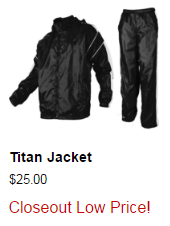

Your goal for this assessment is to create a Product Card which will be composed of an image rotator, name, price, and list of tags.
You must create a module which generates the product card onto the page. This module will be consumed by the index entry point module, which is given to you.
Example Output: 
The ProductCard module will need to consume our view engine, which simply allows you to template out HTML and add insert values easily within a module, allowing easier separation of concerns.
Responsibilities: To create a DOM node which shows a list of images, given a string array of URLs.
Further, it should have the ability to rotate forward or back through the list, possibly by a button or a link.
The view engine is a simple module which takes in a URL to the location of an HTML template page
For data, you must use our API end-point: https://api.gtmsportswear.com/v1/productfamilydetailed/11500